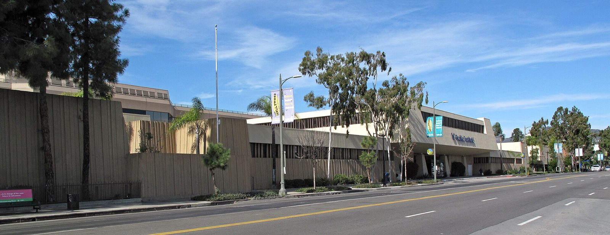

This week
Four things you can join.
DevFest LA, Get into GEAR, Cutie Hack, and a STEM app.
GDG on Campus Riverside City College is an independent group; our activities and the opinions expressed here should in no way be linked to Google, the corporation.
DevFest Los Angeles · Sat, Dec 12
Meet people who work in tech.
9 AM to 4 PM. Talks, hands-on AI workshops, and a job fair. Student tickets are discounted.

Cutie Hack · Sat, Nov 21
A 12-hour beginner hackathon at UCR.
8 AM to 8 PM in Winston Chung Hall. Any major and any skill level. You don’t need to know how to code.

How we’d build it
Each GDG team builds one project, and we put every project into one app.
When it’s done, a student opens the STEM app and finds every team’s project in it.

Before you leave
Tell an officer which one you want in on.
DevFest LA on Dec 12, Get into GEAR, a Cutie Hack team for Nov 21, or a team on the STEM app.
GDG on Campus Riverside City College is an independent group; our activities and the opinions expressed here should in no way be linked to Google, the corporation.